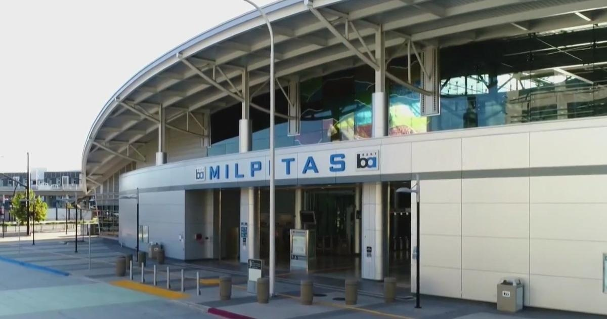

BART's San Jose extension years away as project and ridership fall far short of expectationsLike many young transplants to the Bay Area, Austin Klapman understands the allure of living in the big city — in San Francisco — even while working in the South Bay's tech industry. BART enables him to make that commute between home and office seamlessly without owning a car. "I do like the convenience factor of the train, meaning that I'm able to get from Point A to Point B," Klapman said during the return leg of a recent commute. Klapman said the transit system saves him time and steers him well clear of the headache of sitting stuck in traffic for hours. ALSO READ: "For me personally, I always wanted to live in San Francisco. And the BART really gave me the opportunity for transportation. Because it's just myself, my two feet and my bike," he said. Klapman's experience riding the train from San Francisco to BART's Milpitas station is more the exception than the rule. BART opened its first two stations in Santa Clara County on June 12, 2020 — at the height of the global pandemic. But stay-at-home orders and remote work dealt a transit system a blow from which it has never fully recovered. According to the Valley Transportation Authority which built the BART extension into Santa Clara County, rosy ridership projections had more than 23,000 passengers using the Berryessa and Milpitas stations on day one. The reality has fallen far, far short of those estimates. ALSO READ: In September, more than three years after first opening, the combined average daily ridership for the two stations was 2,349: off the original estimates by nearly 90 percent. "I still am supportive, but I'm very disappointed," said Johnny Khamis, a former San Jose City Councilman and VTA Board Member. Khamis said he is deeply troubled by the rapidly rising costs of the final leg of the BART expansion that will bring train service into downtown San Jose and on to Santa Clara. The VTA now estimates the construction will cost $12.2 billion and won't be complete until sometime in 2036. That's nearly triple the transit agency's original 2014 estimate of $4.7 billion. "This project's a multi-generational, long-term investment. How much is too much? We don't know. It's never going to be cheaper than it is now. It's been a major plan in this Bay Area for over 40 years. And we're just about to start digging so I don't want to hold it up any longer," said VTA General Manager Carolyn Gonot. ALSO READ: More stories on BART Gonot said construction delays and inflation have caused the price of the project to balloon in recent years. Working in the world of tech and finance, Klapman said he understands the concerns about a project that's over budget and behind schedule, but when it comes to more and better connected transit, he's completely onboard. "I grew up in Chicago. And I find the public transportation system in the Bay Area to be light years ahead of Chicago – in terms of safety measures and accessibility," Klapman said. for more features. |
 |